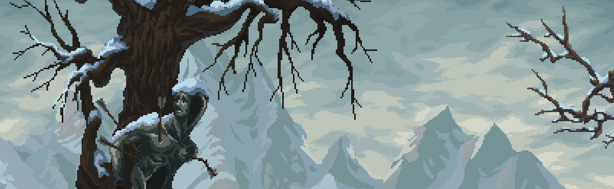
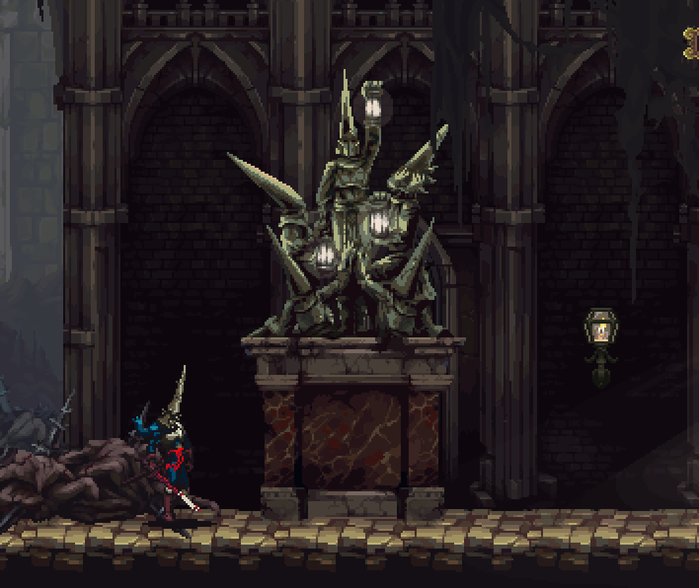
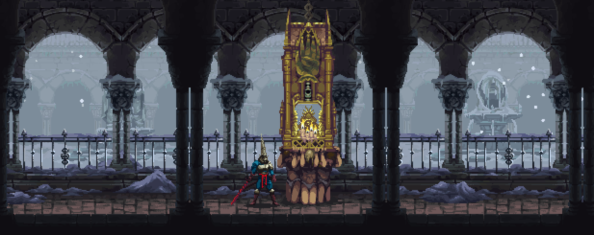
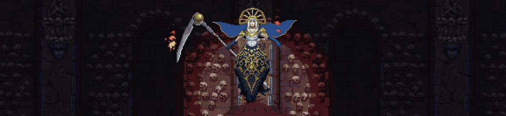

Blasphemous is just one of those games that I couldn’t help but to play. It’s a Metroidvania set in a realm called Cvstodia. The visual theme is pretty much Andalucia pixelized into perfection. I have always enjoyed playing 2D adventure games since I was a kid so Blasphemous was a no brainer.

The game takes place in Cvstodia. “The Miracle” is a force existing in Cvstodia, Transforming everyone into grieving being by making them suffer for their sins. Basically every creature in Cvstodia is atoning for their sins and trying to seek penance. The main character of the game is called the Penitent One, The last remaining member of the brotherhood of the silent sorrow. His sword, forged from guilt itself, is called Mea Culpa. His goal is to reach the “Cradle of Affliction”, and in order to do so he must complete the three humiliations.
I won’t go into the plot of the game much in this blog post.

The game explores a grim universe where everyone is at the mercy of a seemingly evil force, called the Miracle. Almost all of the residents of Cvstodia are in some way atoning for their sins, begging the miracle for mercy in various ways. There is an extreme religious theme to the game, which just fits. The gameplay constantly reminds the player of how unforgiving The Miracle is, Since dying is not something that the game won’t let happen often. Almost everything has a melancholic vibe to it. Rooms, mountains, enemies, friends, bosses and music, all of them are grim and melancholic in design.
The Blasphemous Soundtrack, The MUSIC, is out of this world.
Arpegios en ocre by Carlos Viola:
The music is composed by Carlos Viola, and perfectly matched the Andalusian Vibe of the entire game. The melancholic feeling to every second of every track just makes it perfect for a game with this theme and also helps in creating an amazing atmosphere.
Even after completing the game, I listen to the Soundtrack frequently.

Everything.
I always like to challenge myself while playing a video game. There are a lot of challenging boss fights (and even enemies) in blasphemous, but the game is also very fluent when it comes to gameplay and is just visually pleasing.
There is one boss fight in blasphemous that maybe took 50 consecutive for me tries to beat without taking damage, Isidora the voice of the dead; so yeah I enjoyed that a lot.